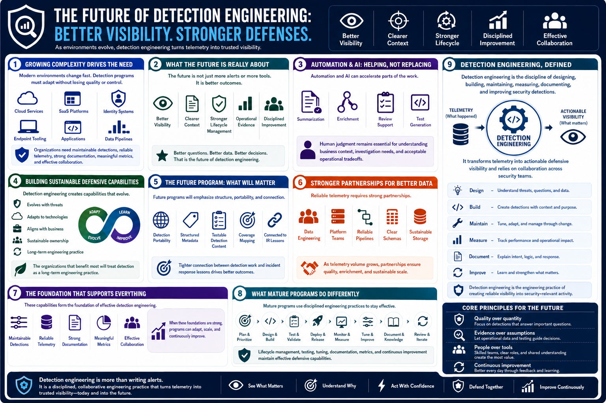

What Is Detection Engineering?
The Future of Detection Engineering
Connecting to LMS... Progress: in progress
Version 1.0 | Date: 2026-06-16 | Educational overview of defensive detection engineering concepts.

Narration
As environments grow more complex, detection engineering becomes increasingly important. Organizations need maintainable detections, reliable telemetry, strong documentation, meaningful metrics, and effective collaboration.
Cloud services, SaaS platforms, identity systems, endpoint tooling, applications, and data pipelines all change quickly. Detection programs must adapt without losing control of quality or ownership.
The future of detection engineering is not just more alerts or more tools. It is better visibility, clearer context, stronger lifecycle management, and more disciplined improvement based on operational evidence.
Automation and AI can help with parts of the work, such as summarization, enrichment, review support, or test generation. Human judgment remains essential for understanding business context, investigation needs, and acceptable operational tradeoffs.
Detection engineering helps create sustainable defensive capabilities that evolve alongside changing threats, technologies, and business requirements. The organizations that benefit most will treat detection as a long-term engineering practice.
Future programs will likely place more emphasis on detection portability, structured metadata, testable detection content, coverage mapping, and tighter connections between detection work and incident response lessons.
They will also need stronger partnerships with data engineering and platform teams. As telemetry volume grows, detection engineers will need reliable pipelines, clear schemas, useful enrichment, and sustainable storage decisions.
Detection engineering is the discipline of designing, building, maintaining, measuring, documenting, and improving security detections. It transforms telemetry into actionable defensive visibility and relies on collaboration across security teams.
Mature programs use lifecycle management, testing, tuning, documentation, metrics, and continuous improvement to maintain effective defensive capabilities. Detection engineering is not simply writing alerts. It is the engineering practice of creating reliable visibility into security-relevant activity.